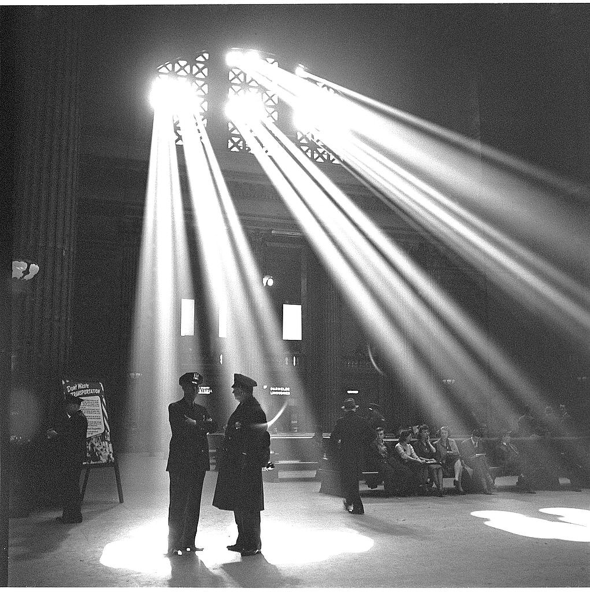

A1 · Travel & Places
Taking the Train
On Sunday Emma takes the train downtown. It is late.
Play the audio and follow along, then read it again on your own. Tap or hover over a highlighted word to see what it means.
On Sunday I take the train downtown. I want to see my friend Anna.
The station is ten minutes from my apartment. I buy a ticket for three dollars.

The train is late. I wait on the platform for fifteen minutes. It is cold, and I am not happy.
Then the train comes. It is full, and I don't get a seat. I stand for four stops.
At the fifth stop a man gets off and I sit down. Outside the window I see the lake. The water is gray today.
I get off downtown at ten past two. Anna is in front of the station with two coffees.
“You're late,” she says.
“I know. The train.”
She laughs. “It's always the train.”
Key Vocabulary
- downtown the center of an American city
- station the place where you get on a train
- ticket the paper or card that lets you travel
- late after the right time
- platform the place in a station where you wait for the train
- seat a place to sit
- to stand to be on your feet, not sitting
- stop a place where the train or bus stops for people
- to get off to leave a train or a bus
- lake a big area of water with land all around it
- to laugh to make a happy sound when something is funny
Taking the Train — A1 · Travel & Places · Renan the Teacher, English Language Academy · https://renangrossi.github.io/englishclasses/reading/a1/taking-the-train.html
Interactive Exercises
Practice
Complete each exercise, then click Submit to see your score and an explanation for every answer.
Speaking & Writing
Discussion
There are no right answers here — use these to practice speaking, or write a short answer to each.
- How do you go to work or to school?
- Is it far? How long does it take?
- Do you take the bus or the train?
- Are the buses and trains late where you live?